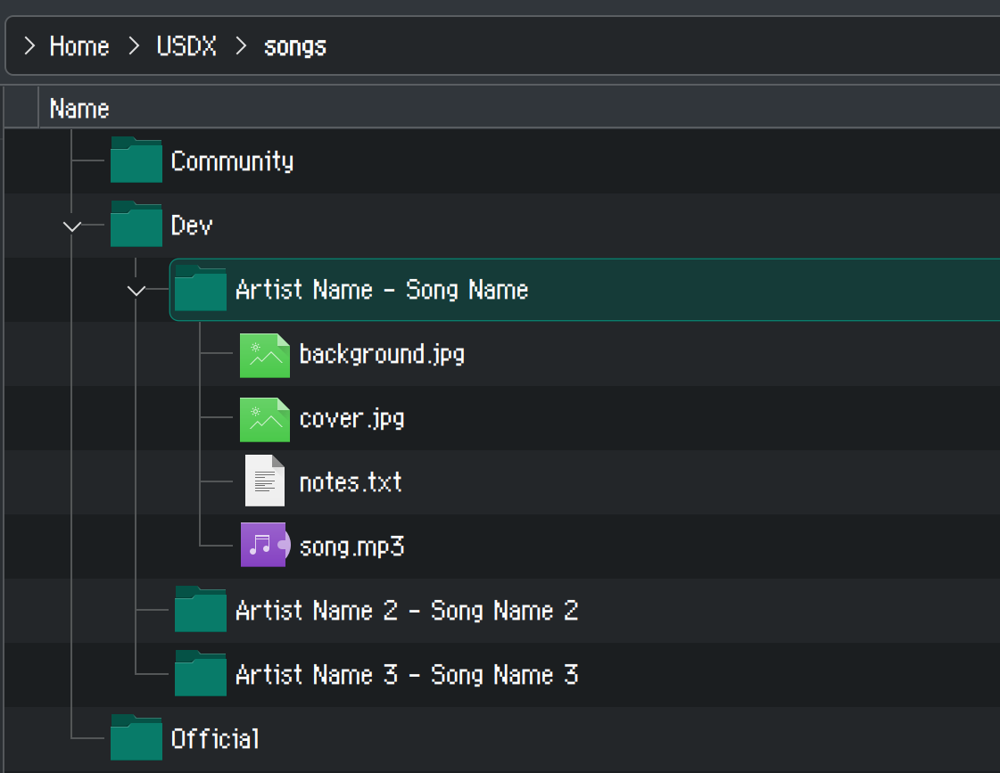

Pony Karaoke Unreleased Song Pack
Contact
For any questions, comments, or concerns about this song pack, bug me on Discord: @horse.horsehorsehorse.horse or @lilyshy
Introduction
The Pony Karaoke Unreleased Song Pack is an add-on package of UltraStar TXT-compliant charts containing My Little Pony fandom songs that I've personally charted or reworked, intended to be added to an existing My Little Karaoke installation. At present, it contains roughly four hundred songs, including:
- G4 songs that are missing from My Little Karaoke (Equestria Girls shorts; Pony Life; some songs from It's A Pony Kind of Christmas)
- G5 show songs (Make Your Mark; Tell Your Tale)
- Modern (and older) fandom songs from artists such as 4everfreebrony, Koa, PrinceWhateverer, and Vylet Pony
...and many more. For a full list, see my song tracker. (The song pack does not include songs highlighted in yellow, which are released and publicly available here.)
It also contains quality improvements for many songs included with My Little Karaoke ('reworks'), which will generally make scoring more accurate, increasing the number of points you will get when the song is sung correctly.
Download
Download speed
Download speeds are kind of slow, so bug me on Discord if you need things faster and I can link you to my private repository.
You can get the song pack here.
You can download everything at once, or selectively download songs that you are interested in.
Songs are separated into the following folders:
- Show: Contains songs from official MLP media (e.g. G4 and G5).
- Fandom: Contains songs from the fandom as a whole.
- Explicit: Contains songs that have strong language (shit or worse) or objectionable content.
- Compat: Contains songs from any category that use OPUS/FLAC audio, which may crash older versions of UltraStar Deluxe (such as the one included with My Little Karaoke).
- Reworks: Contains existing songs from My Little Karaoke that I've modified, usually for playability reasons.
To some extent, songs are further subdivided for ease of search/use; see inside each folder for details.
Installation
This song pack is meant to be used with My Little Karaoke. You can use it by itself, or even with a standalone installation of UltraStar Deluxe (or any other simulator that accepts UltraStar TXTs), but it doesn't include most of the songs from the base My Little Karaoke game. If you don't have it yet, modern installation instructions for My Little Karaoke can be found here, but the existing instructions on the site should generally work fine for Windows or Linux. I would still recommend updating UltraStar Deluxe, though, to assure compatibility with all songs and because of quality-of-life features that have been added since the version bundled with My Little Karaoke.
Song compatibility warning
If you are using the version of UltraStar Deluxe bundled with My Little Karaoke, (versioned as '2020.4 stable' or '2017.x' depending on your operating system), songs from the Compat folder will likely crash the game, so please don't copy it. You can follow the instructions here to update the UltraStar Deluxe software that powers My Little Karaoke to a newer version.
To install these songs, create a folder inside of your songs folder (which would ordinarily contain Official, Community, and Downloads). I recommend naming this folder something like Beta or Dev. Then place the songs (e.g. Artist - Song Name) inside, folder by folder. You can keep them in subdirectories if you want.

For reworks, you can technically drop them in place on their respective folders in the Official and Community folders, replacing existing files, since usually the only thing that is modified is the .txt file(s). Do keep in mind that this will make it impossible to submit scores for those songs on the highscore leaderboard, since they will no longer be in sync with the released versions. If you're fine with duplicates, I would just keep them in the Beta/Dev folder in their own subdirectory. In most cases, song reworks have [RM] appended to the song title, and will thus appear alongside the normal releases.
Questions people might have
Does this pack have...?
Please see my song tracker. The repository is based on what's in my lily-dev folder, which contains any songs that I've charted but which are not released.
Why does this exist?
In the past couple years, I've charted a lot of pony songs as part of My Little Karaoke (in fact, about half of the new releases since 2022 are charts that I've made). However, they have not been added to My Little Karaoke at the same pace, simply because QA is done by one person and I can create new charts much faster than they can be cleared, checked, and released. In the meantime, I've been posting anything I've made on the My Little Karaoke Discord server, but since I post everything individually as I release it, there isn't really a single download for everything I've made, meaning ordinarily people would have to go through and click each download, which would take a while. And, of course, Discord is semi-private, so the outer Internet won't have access without making an account and joining.
At the same time, I know that people might see My Little Karaoke at some convention/event they go to and then wonder why they're missing some songs they saw at the event when they install the game at home or when they run the game at their own event. This song pack is sort of my answer to that, or at least as much of an answer as I can provide on my own.
This is not an attempt to branch off of or hostile fork My Little Karaoke! I still want songs to eventually be released there (and will continue to provide songs for that purpose). I'd just also like a way for people less familiar with the program to add my newer contributions in bulk to their copies of the game, since they presumably include some songs that people have wanted for a while.
What makes this any different from My Little Karaoke?
My Little Karaoke is great, and in fact I highly recommend that you install that BEFORE you add songs from here, as it contains the vast majority of songs that you may be familiar with (most fandom classics were already in the game, after all). This pack simply contains the pony songs that I've charted that haven't been released yet.
The main differences between songs from here and anything released on My Little Karaoke are:
- Cover art, background art, and videos may be missing, as I haven't found anything suitable and did not want to take the time to find something
- The song hasn't been proofread by a second person, and so may contain lyrical errors or gameplay errors that I didn't catch (e.g. notes in the wrong place or set to the wrong pitch)
- The artist may not have given explicit permission for the song to be distributed on a wide scale
- The chart itself may just have less 'polish' (e.g. missing things like golden notes, or using low quality audio)
In the case of song reworks, they usually have improved timing and pitching, which will make it easier to get a higher score. That is not to say that the existing charts are unplayable; just that I improved them because I can be a bit of a competitive gremlin when it comes to getting the most points in karaoke.
Are any of these songs unplayable, or lower quality than My Little Karaoke? Are they unstable or dangerous?
I don't think so! I take pride in my work, and I like to think that I do a pretty good job at what I do. I test everything before I publish it and in my (and others') experience, everything is remarkably playable, or in some cases more playable than some of the older My Little Karaoke charts.
Any songs here contain at least:
- The UltraStar TXT file itself (the chart for the song)
- The song (often in MP3 format)
And occasionally:
- Cover art and background art
- Sometimes a video (1080p maximum)
- Rarely a shell script (e.g.
extract.shorextract-params.bat) which contains the specific commands used to shorten or extract a video - Rarely a
.llcfile, used with LosslessCut which is a GUI to do the above
Songs that use more bespoke audio formats, like OPUS or FLAC, might cause the game to crash on older versions of UltraStar Deluxe, such as the one currently included with My Little Karaoke installs. This is why I recommend updating UltraStar Deluxe (while keeping My Little Karaoke's songs, obviously). Other than that, they are not really 'unstable' and will not cause the game to crash any more than it ordinarily would.
That being said, if you're unable to update the program, then please don't use songs from the Compat folder (or at least test them to see if they work on your end before you do).
Are there any caveats? What if one of these songs is released/added to My Little Karaoke officially?
If you use the My Little Karaoke leaderboard, you won't be able to post any scores from these songs there, since they haven't been added. Also, since these are technically 'unreleased', they will likely differ from the final release in some way, so scores you get may be hypothetically unrepresentative of what you would actually get once the song is released.
Other than that, no. They are perfectly compliant UltraStar TXT files that you can play with and modify and whatever.
When a song is 'officially released', simply delete it from your the Dev or Beta folder or whatever you created, and get the new release from the new releases page (or however else it's distributed)! Your scores may not carry over, though.
Can I share your charts with a friend?
Sure! Ideally, just link back here so they have the full details of what this is and can maintain things themselves. I don't particularly care if people redistribute my work for whatever reason.
I can't say the same for other people, though, so if you have charts that someone else made, please ask them first.
Do any of these songs contain strong language or explicit material?
Yes, some songs contain strong language and/or explicit material. However, I've done my best to separate these songs into their own folder (Explicit), so you can opt to ignore that folder (ie. don't download it) if you would not like them to appear in your installation.
Do note that My Little Karaoke itself already includes some songs with content that may be found objectionable outside of the context of the fandom (e.g. Rainbow Factory), while other songs may include strong language. If you're running this at an event where such content is not permissable, you may want to disable fandom songs entirely (i.e. move the Community folder somewhere else) or just be more careful about what you play if you've never heard it before. Most fandom songs are completely safe, but some can contain strong language or material. Below is a list of My Little Karaoke's songs with strong language:
- donglekumquat - Hoofdachest
- FraGmenTd - Balloons In My Basket
- Hirosashii - Please Don't Stop That Bass
- MC QT - The Dazzlings
- Michael Arellano (ft. DerpyGrooves) - I Need That
- (new release) My Little Romance - Hippogriffs
- (new release) PrinceWhateverer - I'm Not Gay
- Secret Metal - Faster Than A Lightning
- Silva Hound - Addict ft. Kovach & Chi-Chi
- Tarby - Rejected
- Vaceslav - Plain Not Nice
- (new release) Vylet Pony - ANTONYMPH
- (new release) Vylet Pony - BONNIE
The song pack is still missing a song that I played at an event!
I've made a lot of things, but I didn't make literally every work-in-progress/unreleased song out there (greetz go to BronyMike, barbeque, Renard, RomeoNightinamare, RustyHeadphones, and probably other people I've forgotten). Most of their works have been posted on the forum at some point, but any that haven't were probably posted on the My Little Karaoke Discord server at some point. Feel free to ask me (or ask on the Discord server) if you're looking for something specific.
Anyway, because I didn't create or contribute to those charts, I'm not comfortable including them in a publicly compiled song pack, so please acquire them yourself. Apologies for the inconvenience.
It's also possible that whatever you're looking for is actually part of the base game, and your computer is having a skill issue of some sort. Again, feel free to ask me (or ask on the Discord server) and I can try to help troubleshoot.
It's also also possible that I just forgot to upload it, so please let me know if something from the song tracking spreadsheet is missing.
I run karaoke at an event and was provided some new songs, but I'm not sure what I have.
When I or other karaoke horses attend an event where we are not running karaoke, we often provide our local song collections, which usually include unreleased songs, and thus include the songs in this song pack. Obviously, such collections will only be up to date as of whenever the event took place. My song tracker keeps tracks of the dates that songs were created as well as the events that I have personally attended, so if I provided the songs then it will include everything up to and including the marked entry for the event. From there, you can selectively download anything new I've created by cross-comparing it to the song tracker, or just get it from me next time we cross paths.
If you have any questions about what you have, feel free to reach out and I can take a look.
How do I know when new songs are added?
I try my best to post anything I make on the My Little Karaoke Discord on Sundays, so check back around then. I'm not sure how often I'll keep this repository up to date but I'm hoping to also update it on Sundays as the same time as I dump songs on Discord.
I am the artist of an included song and would like it removed.
I'm sorry! Please bug me on Discord (@horse.horsehorsehorsehorse.horse or @lilyshy) and I can remove the audio file if you're mainly concerned about music piracy, or the TXT too if you just would not like it to be included at all.
Note that everything is purposely encoded down to MP3@320kbps specifically so that people who want lossless audio will still have to buy it, while still maintaining decent audio quality when playing the actual game. If I've made a chart for a song, it's because I really like the song and figured people would enjoy singing along to it! But I will respect any requests to not have songs included, whatever the reason. My main goal has always been for people to have fun, not to piss people off.